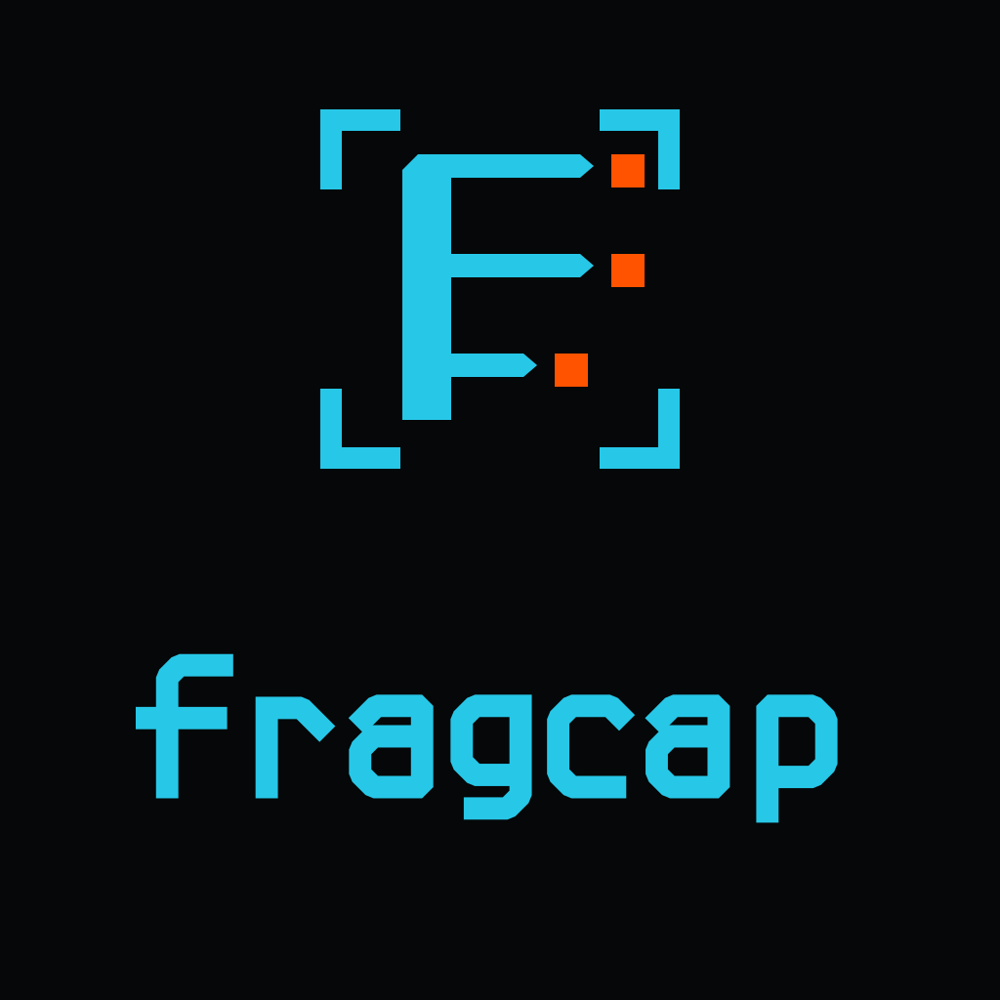
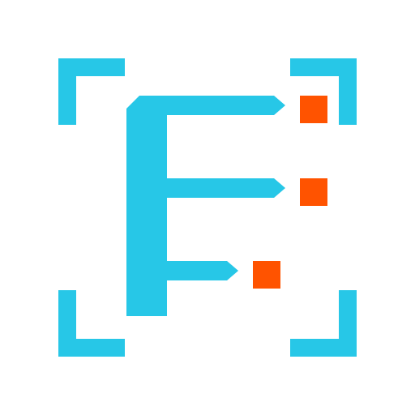
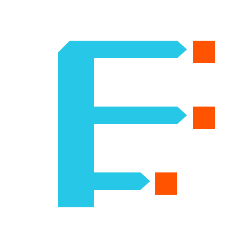

Visual system reference. Everything on this page is rendered from
styles.css and components/components.css.
Marks and lockups
A triple-bladed F for parallel packet lanes, four separated corner segments forming a capture frame, and orange terminals for the bytes isolated by capture. The wordmark ships as filled vector outlines; it is never live text and never a substituted typeface.



One orange terminal, all the way round
The dashed boundary is the minimum. No text, border, icon or crop may enter it. Below 32 px the four reticle corners collapse into noise, so small icons use the reduced mark from the favicon exports.
Dark-first, close to monochrome
Roughly 80% neutral surfaces, 15% cyan, under 5% orange in a typical view. Orange is not a general call-to-action color. Contrast ratios are measured against the surface each token is used on.
Signal Cyan is 1.89:1 on Light Surface. Never set it as text on a pale background - use Light Cyan. The same applies to Capture Orange, which needs Light Orange.
Display, reading, payload
Passive process-attributed network capture for games.
| Function | Typeface | Weights |
|---|---|---|
| Display and headings | Space Grotesk | 500, 700 · tracking −0.025em |
| Body and interface | Geist | 400, 500 · line-height 1.65 |
| Packet data and code | Geist Mono | 400 · no ligatures |
| Product wordmark | Custom vector lettering | Filled outlines, fixed artwork |
CaptureRow and controls
CaptureRow is the signature component: one observed packet, with the attributed process and a capture state rendered as a labelled badge, so it never rests on colour alone.
The same components, one class
Adding class="fc-light" to any container
swaps the semantic tokens to the light reading surface and the deeper accent
values. No second stylesheet, no component changes.
Captured signal. Preserved evidence.
Accent text here uses Light Cyan, not Signal Cyan.
Why the imagery rules are strict
Reading game traffic is where protocol reverse-engineering starts, and that is how cheats get written. fragcap's answer is scope: capture and decode, never inject or modify. Moderators and anti-cheat vendors triage on appearance long before they read code, so a skull or a crosshair answers the question for them.
- Use SVG wherever the surface supports it.
- Keep the Void tile in small icon exports.
- Pair every colour-coded state with text or an icon.
- State prerequisites before instructions.
- Label unknowns as unknowns.
- Rotate, skew, stretch, outline, bevel or add glow.
- Recolour individual packet lanes.
- Move the terminals or make them look explosive.
- Close the four reticle corners into a box or circle.
- Set the wordmark in live text or a substitute typeface.
- Combine the fragcap and ShruggieTech marks into one lockup.
- Add skulls, weapons, controllers, shields or exploit imagery.
A ShruggieTech project · fragcap brand system 1.1.0